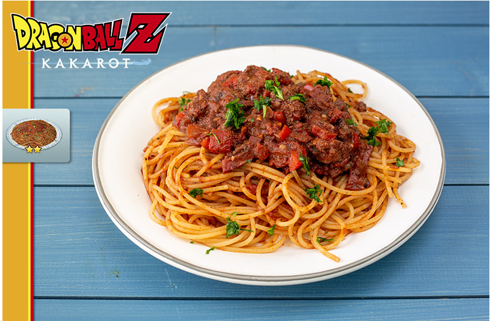

Dragon Ball Z: Kakarot - Wild Pasta

This wild pasta dish is inspired by the adventurous and flavorful world
of Dragon Ball Z: Kakarot. It combines the bold flavors of wild game with
a variety of fresh vegetables, creating a dish that's as exciting and
satisfying as a battle against powerful foes. Enjoy this unique culinary
journey!
Ingredients:
- 1 pound of wild game meat(such as venison or wild boar), thinly sliced.
- 1 pound of your favorite pasta (spaghetti or fettuccine works well)
- 2 tablespoons olive oil
- 1 onion, finely chopped
- 3 cloves garlic, minced
- 1 bell pepper, thinly sliced
- 1 cup cherry tomatoes, halved
- 1 cup fresh spinach leaves
- 1 teaspoon dried oregano
- 1 teaspoon dried basil
- Salt and pepper to taste
- 1 tablespoon Sensu Bean Sauce (soy sauce with a dash of hot sauce)
- 1 tablespoon Goku's Grind (a mix of ground sesame seeds and seaweed)
- 1 teaspoon Capsule Corp Crystals (crushed red pepper flakes)
- 1 Dragon Ball-sized knob of ginger, grated
- 2 tablespoons Vegeta's Vinegar (rice vinegar)
- Grated Parmesan cheese for garnish
- Ki-infused water for boiling pasta (just for fun!)